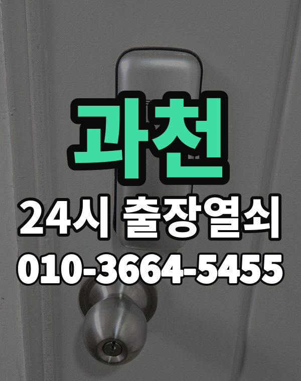

과천은 이런 곳입니다
과천은 별양, 부림동 아파트와 갈현, 문원동 새 아파트와 주택가가 모여 있는 작은 도시입니다.
재건축으로 새 단지가 많아 신형 도어락이 많습니다.

과천시 출장 가는 동네
- 별양동
- 부림동
- 원문동
- 중앙동
- 갈현동
- 문원동
별양동 출장열쇠, 부림동 열쇠집처럼 동네 이름으로 찾으셨어도 같은 곳입니다.
적혀 있지 않은 동네도 과천시 안이면 다 갑니다.
과천 출장 작업 종류
과천 출장, 이렇게 알려주세요
단지 이름과 동, 호수를 알려주시면 바로 찾아갑니다.
정부청사 주변 사무실 출입문도 출동합니다.
과천역, 정부과천청사역, 대공원역 근처라고 말씀해 주셔도 위치 잡기가 쉬워집니다.
가까운 역이나 큰 건물, 단지 이름을 같이 알려주세요.
- 주소와 건물 이름 (아파트면 동, 호수)
- 문 종류, 번호판이 켜지는지
- 사시는 걸 확인할 신분증이나 우편물이 있는지
전화부터 작업까지 순서는 이용안내에 적어 두었습니다.
과천 출장열쇠 관련 글
- 과천 부림동 이사 후 도어락 번호 재설정과 열쇠 정리 출장열쇠 순서
- 과천 별양동 아파트 스마트 도어락 고르는 기준과 출장열쇠 설치 안내
- 과천 갈현동 스마트 도어락 고르는 법 지문 카드 번호 비교와 교체 순서
- 과천 중앙동 상가 사무실 출입문 안 열릴 때 출장열쇠 부르는 순서
- 과천 문원동 이사 후 도어락 비밀번호 초기화 재설정 방법과 순서
- 과천 원문동 지문 인식이 갑자기 안 될 때 원인과 출장열쇠 점검 순서
과천 출장열쇠 자주 묻는 질문
과천 어느 동네까지 오시나요?
별양동, 부림동, 원문동, 중앙동, 갈현동, 문원동 등 과천시 전 지역 갑니다. 과천시 안이라면 동네 상관없이 갑니다.
과천 늦은 시간 출장도 되나요?
밤이든 새벽이든 받습니다. 어디인지 들으면 언제쯤 도착하는지 바로 말씀드립니다.
끝내 못 열면 돈은 어떻게 되나요?
못 열면 받지 않습니다. 얼마인지는 손대기 전에 먼저 말씀드립니다.
본인 확인은 어떻게 하나요?
거주하시는 분인지 확인한 뒤 엽니다. 신분증이 집 안에 있으면 관리사무소 확인도 됩니다.
과천에서 도어락 고장도 봐주시나요?
네, 합니다. 문에 맞는 제품인지 보고, 고칠 수 있으면 수리를 먼저 권합니다.